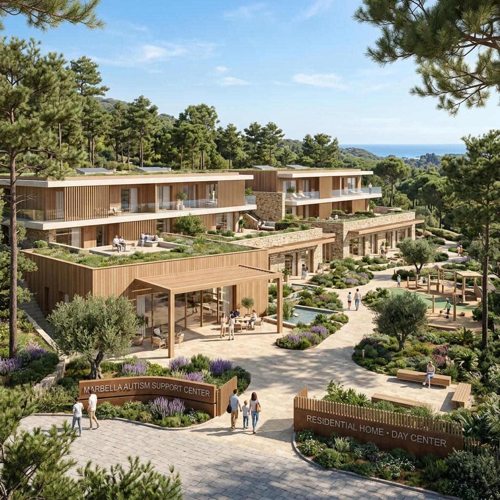

Entender el autismo hoy para construir el mañana
Brindamos apoyo especializado, diagnóstico clínico y terapias de desarrollo para personas con autismo y sus familias en la Costa del Sol. Acompañamos vidas, inspiramos futuros.
Brindamos apoyo especializado, diagnóstico clínico y terapias de desarrollo para personas con autismo y sus familias en la Costa del Sol. Acompañamos vidas, inspiramos futuros.

Dividimos nuestra acción en tres grandes pilares enfocados a mejorar la calidad de vida de las personas autistas.
Brindamos orientación, asesoramiento psicológico, legal y moral para que las familias nunca se sientan solas en el proceso.
Saber másIntervenciones terapéuticas individuales, logopedia, grupos de habilidades sociales por edades y terapias asistidas con animales.
Ver TerapiasPromovemos la inclusión escolar, deporte adaptado, salidas de ocio y campañas de visibilización en toda Málaga.
Unirse al voluntariadoGracias al 80% de deducción fiscal por nuestra declaración de Utilidad Pública, tu apoyo se multiplica conservando tu economía.
Cada letra de **AUTISMO** nos recuerda el valor de cada persona única dentro del espectro. Pasa el cursor o haz clic en las letras para descubrirlo.
El autismo no es una enfermedad que se cura. Es una condición del neurodesarrollo que nos ofrece una forma diferente de percibir, procesar y responder al mundo. ¡Haz clic en cualquiera de las letras arriba para explorar sus fortalezas!
Cada ladrillo cuenta. Tu donación financia directamente la adecuación del suelo y las futuras viviendas tuteladas.
Nacimos en **2002** de la mano de un grupo de madres y padres de niños y niñas autistas en la Costa del Sol. Surgimos de la necesidad vital de encontrar respuestas y tratamientos especializados en una época con recursos muy limitados.
Partimos del principio de que **la intervención temprana es clave** para mejorar la adaptación y la calidad de vida en el autismo. Hoy en día, superamos los 80 socios y atendemos a familias de toda la provincia de Málaga desde nuestra sede en Marbella.
"En la diversidad está el enriquecimiento"
Nuestra asociación lleva con orgullo el nombre de **Ángel Rivière (1949-2000)**, psicólogo y científico cognitivo español, pionero indiscutible en la investigación del Trastorno del Espectro Autista en España. Él diagnosticó personalmente a muchos de los hijos de las familias fundadoras de AAAR, inspirando esperanza y aportando una visión profundamente humana y científica de la diversidad neurológica.
Su dedicación a las familias y su legado en el estudio de la teoría de la mente marcaron un antes y un después en la comprensión del autismo.
Leer Biografía en WikipediaNace en Madrid el 16 de junio. Hijo de docentes, orientaría su vida al conocimiento cognitivo.
Catedrático e investigador. Inicia su labor docente en la Universidad Autónoma de Madrid, donde será catedrático de Psicología Cognitiva.
Encuentro con el Autismo. Comienza a trabajar activamente con niños autistas en colaboración con la Asociación APNA, labor que continuó toda su vida.
Publicaciones clave. Escribe "La Psicología de Vigotsky" y "Razonamiento y representación", que obtuvo el premio extraordinario de tesis.
AAAR está plenamente homologada e inscrita en los principales organismos públicos de Andalucía y España:
Inscrita legalmente en el Registro General de Asociaciones.
Homologada por la Consejería de Inclusión Social y Familias.
Entidad colaboradora de la Consejería de Educación de la Junta de Andalucía.
Acreditada en el Registro de Entidades Ciudadanas del Ayto. de Marbella.
Inscrita en el Registro General de Entidades de Voluntariado.
Miembro activo de la Federación Autismo Andalucía.
Para asegurar terapias actualizadas y de la más alta calidad científica, contamos con convenios de prácticas de grado y máster con universidades andaluzas y nacionales. Además, acogemos a estudiantes de toda Europa a través del programa Erasmus+.
La fuerza de AAAR reside en la unión y el apoyo mutuo. Lee las experiencias de algunos de los padres de nuestra asociación.
"Cuando diagnosticaron a nuestro hijo hace 15 años, nos sentimos perdidos. En AAAR encontramos no solo terapeutas excelentes, sino una familia de padres que nos guió y nos dio esperanza en cada etapa."
"El proyecto de la residencia en Elviria es el sueño de todos los padres de la asociación. Saber que mi hijo tendrá un hogar adaptado, seguro e integrado en su comunidad cuando nosotros faltemos nos da una paz infinita."
"Los grupos de habilidades sociales han cambiado la vida de mi hija. Ahora tiene amigas con las que compartir sus tardes y salidas de ocio los fines de semana, algo que antes de entrar en la asociación parecía imposible."
Realizamos evaluaciones completas para niños, jóvenes y **adultos**. Un diagnóstico preciso es el primer paso para estructurar un plan de apoyo adecuado.
Infantil y AdultosTerapias individuales dirigidas a niños pequeños para potenciar al máximo el desarrollo comunicativo, motriz y social durante los años más plásticos del cerebro.
Atención TempranaSesiones individuales de psicología, logopedia y psicopedagogía enfocadas a mejorar las habilidades adaptativas y comunicativas en el día a día.
IndividualizadoTerapias asistidas con animales que facilitan la interacción social, la regulación sensorial y emotional, de forma amigable y lúdica.
EspecializadoTalleres grupales organizados por rangos de edad. El espacio ideal para poner en práctica la interacción, empatía y creación de lazos de amistad con pares.
Grupos por EdadesCampamentos semanales durante Semana Santa, verano y Navidad, proporcionando ocio adaptado a los usuarios y respiro a las familias.
Ocio y ConciliaciónSesiones de natación y actividades físicas adaptadas a las destrezas de cada participante, promoviendo la salud y la integración motriz.
Deporte AdaptadoAsistencia y asesoramiento educativo en centros escolares para facilitar la inclusión real del alumno en el entorno de aprendizaje ordinario.
Apoyo EscolarFormación para padres, talleres de resolución de dudas y encuentros periódicos de familias para compartir experiencias y tejer comunidad.
FamiliasEl Trastorno del Espectro Autista (TEA) no es una enfermedad, es una condición del neurodesarrollo que dura toda la vida. Conocer sus manifestaciones y grados ayuda a derribar barreras sociales.
Hablamos de **espectro** porque no existe una sola forma de autismo. Cada persona dentro del espectro presenta necesidades, fortalezas y sensibilidades únicas en comunicación, intereses y procesamiento sensorial.
¿Tienen vacunas relación con el autismo? No. Múltiples estudios científicos rigurosos a nivel mundial han demostrado inequívocamente que las vacunas no causan autismo. El origen es principalmente genético y neurobiológico.
Actualmente, cuando las personas autistas llegan a la edad adulta, las opciones de apoyo especializado disminuyen drásticamente. Las familias se enfrentan a la angustia de no saber qué pasará con sus hijos cuando ellos falten o se hagan mayores.
Para solucionar esto, AAAR impulsó la cesión de suelo municipal. Tras un primer decreto en 2019 de una parcela en La Alzambra de solo 1.880 m² (que resultaba muy pequeña e insuficiente para un proyecto de residencia con viviendas tuteladas), el **Ayuntamiento de Marbella firmó el 13 de noviembre de 2025** la concesión definitiva de un terreno mucho más idóneo de **6.650 m²** en Santa María-Elviria.
 Terreno Concedido en Elviria (Real)
Terreno Concedido en Elviria (Real)
Necesitamos donaciones privadas, patrocinios corporativos y subvenciones para llevar a cabo cada etapa de construcción. Haz clic en las fases para ver el progreso y presupuesto.
En el año **2022**, el Ministerio del Interior de España declaró a la Asociación de Autismo Ángel Rivière como **Entidad de Utilidad Pública**. Esto certifica la transparencia y los fines sociales de la asociación y habilita las siguientes deducciones en tus impuestos:
Requisito Indispensable: Para emitir tu certificado fiscal, es obligatorio que nos facilites tu Nombre y Apellidos, DNI/NIE y código postal a través de nuestro correo `autismoaaar@gmail.com` tras realizar tu donación.
Ingresa la cantidad que te gustaría donar para ver cuánto dinero desgravarás en tu próxima declaración de la renta y cuál será el coste real de tu aportación.
Detectar el autismo de forma temprana es crucial para iniciar los apoyos terapéuticos que marquen una diferencia positiva en el desarrollo infantil. A esta edad (2-3 años), se pueden empezar a observar diferencias en el habla, el juego y las interacciones.
No es necesario que aparezcan todas estas señales. Si observas que tu hijo no habla o ha dejado de hablar, no responde a su nombre, no señala ni tiene intención de comunicarse, o ha perdido habilidades que ya tenía, te recomendamos consultar con un profesional.
Celebrado cada año desde 2008 tras su declaración por las Naciones Unidas. En AAAR organizamos talleres en Marbella, colgamos globos azules y nos unimos a campañas locales para concienciar sobre la inclusión escolar y laboral.
Ver actividades de este añoDesde el año 2013, el diagnóstico oficial de Síndrome de Asperger fue incorporado bajo el término general de Trastorno del Espectro Autista (TEA), tratándose clínicamente como TEA Nivel 1. Esto facilita la obtención de apoyos unificados.
Niveles de apoyoPuedes realizar una transferencia puntual o programar una aportación periódica directamente en la cuenta oficial de la asociación en **CaixaBank**:
Concepto de la transferencia: "Donación Proyecto Elviria" o "Donación General" + Tu Nombre y DNI.
Una forma rápida y sin comisiones de donar desde tu móvil. Entra en tu App bancaria, selecciona 'Enviar Bizum Donativo' e introduce el siguiente código:
Una vez completada la donación, envíanos tus datos de contacto por email si deseas solicitar el certificado fiscal oficial.
Rellena este breve formulario con tus datos. Esto es necesario para poder enviarte el **certificado de deducción fiscal (Ley 49/2002)** y para que nuestro equipo te acompañe y confirme la recepción.
Agradecemos sinceramente el apoyo y las sinergias construidas con las siguientes entidades colaboradoras:
En nuestros inicios visitábamos a las familias en sus domicilios. Desde el año **2010**, contamos con una sede cedida y adaptada gracias al Ayuntamiento de Marbella en Rio Real, donde desarrollamos la actividad terapéutica diaria:
Tu consulta ha sido enviada al equipo de AAAR. Nos pondremos en contacto contigo lo antes posible.